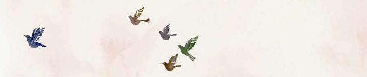

כמה מילים עבור הורים ומחנכים המגדלים את ילדי דור הבא:
לפני שנים בניתי קן עם איש שגדל בתרבות שונה משלי, ויחד הבאנו לעולם ארבע "גוזליות", פרי של
נכונות להתאמץ להכיר וליצור יחד משהו חדש. במרוצת השנים חשבתי על המשמעויות הרבות של
מיזוג תרבויות בחברה ועל השפעתם של החיבורים התרבותיים על החברה הישראלית בדורות הבאים.
החברה האנושית בכל העולם עוברת בעשורים האחרונים שינויים משמעותיים עקב תנועות הגירה והתפתחות הטכנולוגיה והתקשורת.
חייהם של רוב בני האדם מתקיימים בסביבות מגוונות ובמרחבים שמעודדים אינטראקציות רב־ תרבותיות ומצריכים ידע ומיומנויות כדי להתמודד איתן. גם הרכבים משפחתיים ומערכות חינוך מושפעים משינויים אלו. בבואנו להכין את ילדינו לחיים, עלינו להקדיש מחשבה לגבי שינויים אלו ולהתייחס אליהם.
סיפורו של גוזי הגוזל, השייך למשפחת דוכיפת מצד אימא ולמשפחת סיקסק מצד אבא, מעלה, באופן ציורי ומכיל, שאלות ודילמות הקשורות להורות המודרנית -
גוזי מעלה סימני שאלה כאשר הוא פוגש מגוון תרבותי בסביבתו הקרובה, ומבטא תחושות בדידות וחוסר ודאות. בזכות נוכחותם של המבוגרים המשמעותיים בסביבתו ותיווכם, גוזי מגיע לתובנה לגבי השונות שלו.
מרחב חיים רב־תרבותי הוא גם במה להתבוננות סקרנית, ללמידה ולפיתוח מיומנויות חברתיות. המרחב המשפחתי ומרחב גן הילדים מזמנים לילדים התנסות ראשונה בגמישות חברתית. במרחבים הללו יכולים הילדים להסתכל על עולמם מזוויות ראייה שונות, למצוא את הדומה והשונה בסביבתם, להשתנות ולהרחיב את תובנותיהם לגבי עצמם.
"אימא, איזו ציפור אני?" הוא משל חברתי על סביבה תרבותית מגוונת המקדמת תפיסות ועמדות של חבורים בין קבוצות שונות ומגוונות.
חיבורים מתרחשים בזכות בני אדם היודעים לראות את הזולת לא רק דרך המקום ממנו הוא בא, לא רק מבעד לשוני ולזרות. בני אדם המחזיקים בעמדה של רגישות לתרבות ולמגוון התרבותי,מייצרים גשרים של סקרנות, התפעלות, פתיחות ואהבה.
מיכל בן־שאול כהן יועצת חינוכית בגיל הרך
קלאודיה גרובר פסיכולוגית חינוכית
החברה האנושית בכל העולם עוברת בעשורים האחרונים שינויים משמעותיים עקב תנועות הגירה והתפתחות הטכנולוגיה והתקשורת.
חייהם של רוב בני האדם מתקיימים בסביבות מגוונות ובמרחבים שמעודדים אינטראקציות רב־ תרבותיות ומצריכים ידע ומיומנויות כדי להתמודד איתן. גם הרכבים משפחתיים ומערכות חינוך מושפעים משינויים אלו. בבואנו להכין את ילדינו לחיים, עלינו להקדיש מחשבה לגבי שינויים אלו ולהתייחס אליהם.
סיפורו של גוזי הגוזל, השייך למשפחת דוכיפת מצד אימא ולמשפחת סיקסק מצד אבא, מעלה, באופן ציורי ומכיל, שאלות ודילמות הקשורות להורות המודרנית -
- התייחסות לאחר ולשונה בחברה מתוך חינוך לסובלנות וגם כמשאב חברתי.
- שיתוף ילדים במורכבות המשפחתית, ומתוך כך התמודדות עם סביבה מגוונת, עם דעות שונות ועם פתרון קונפליקטים
גוזי מעלה סימני שאלה כאשר הוא פוגש מגוון תרבותי בסביבתו הקרובה, ומבטא תחושות בדידות וחוסר ודאות. בזכות נוכחותם של המבוגרים המשמעותיים בסביבתו ותיווכם, גוזי מגיע לתובנה לגבי השונות שלו.
מרחב חיים רב־תרבותי הוא גם במה להתבוננות סקרנית, ללמידה ולפיתוח מיומנויות חברתיות. המרחב המשפחתי ומרחב גן הילדים מזמנים לילדים התנסות ראשונה בגמישות חברתית. במרחבים הללו יכולים הילדים להסתכל על עולמם מזוויות ראייה שונות, למצוא את הדומה והשונה בסביבתם, להשתנות ולהרחיב את תובנותיהם לגבי עצמם.
"אימא, איזו ציפור אני?" הוא משל חברתי על סביבה תרבותית מגוונת המקדמת תפיסות ועמדות של חבורים בין קבוצות שונות ומגוונות.
חיבורים מתרחשים בזכות בני אדם היודעים לראות את הזולת לא רק דרך המקום ממנו הוא בא, לא רק מבעד לשוני ולזרות. בני אדם המחזיקים בעמדה של רגישות לתרבות ולמגוון התרבותי,מייצרים גשרים של סקרנות, התפעלות, פתיחות ואהבה.
מיכל בן־שאול כהן יועצת חינוכית בגיל הרך
קלאודיה גרובר פסיכולוגית חינוכית